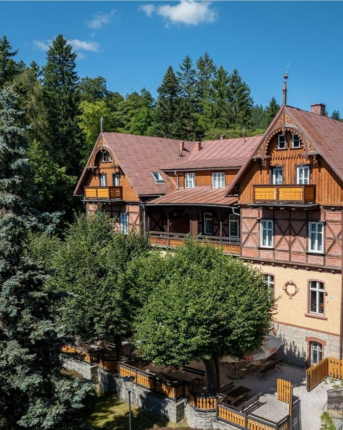

Karczma z urodzenia, nie z konceptu
Ten budynek stoi tu od 1892 roku - powstał jako Hotel Klose i od pierwszego dnia witał podróżnych zmierzających w Karkonosze. Dziś, na jego parterze, wracamy do tamtej roli: zamiast pokoi mamy dla Państwa dobrze zastawiony stół.
Wyszynk to dawne określenie miejsca, gdzie podawano trunki i jedzenie - lokalne centrum życia. Dokładnie tym chcemy być: miejscem kuchni karkonosko-czesko-śląskiego pogranicza, prostego dobrego jedzenia i chwili oddechu po dniu spędzonym w górach. Nie udajemy karczmy. Jesteśmy nią z urodzenia.

Lany Pilsner Urquell prosto z beczki
Serwujemy wyłącznie niepasteryzowany Pilsner Urquell, nalewany zgodnie z czeską sztuką tankowania. To rzemiosło wymagające cierpliwości i wprawy - efektem jest piwo o pełni smaku, jakiej nie osiągnie się z butelki.
0,5 l — 20 zł · 0,3 l — 17 zł
Hladinka
Klasyczne nalanie z kremową, gęstą pianą - podstawowy i najczęściej wybierany sposób podania.
Šnyt
Mniej piwa, więcej piany - lżejsza porcja idealna na krótką przerwę między daniami.
Mlíko
Mleczne nalanie samej piany - aksamitny akcent na zakończenie wieczoru.
Menu
Zupy
Wyszynkowy rosół z gęsi i kury (350ml)
29 złEsencjonalny rosół, długo gotowany na gęsi i kurze, podawany z domowymi szpeclami, marchwią i świeżą natką pietruszki.
Kulajda (350ml)
26 złTradycyjna czeska zupa na śmietanie z leśnymi grzybami, ziemniakami, koperkiem i jajkiem.
Żur śląski (350ml)
28 złPrzygotowywany na swojskim zakwasie, z białą kiełbasą, wędzonym boczkiem, jajkiem i domowym pieczywem.
Karkonoska kwaśnica (350ml)
29 złGotowana na wędzonym żeberku, ze swojskiej kiszonej kapusty i aromatycznych przypraw, podawana z wiejskim chlebem.
Zakąski z Wyszynku
Pieczony Hermelín z żurawiną i czosnkiem (245g)
32 złCzeski klasyk w gorącej odsłonie. Ser pleśniowy zapiekany ze świeżym czosnkiem i słodką żurawiną, podawany na rozgrzanej żeliwnej patelni w towarzystwie piwnego precla.
Patelnia kiełbas pieczonych w ciemnym piwie (260g)
36 złKompozycja regionalnych, krojonych kiełbas zapiekanych w gęstym sosie na bazie ciemnego piwa, musztardy i karmelizowanej cebuli, podawana prosto z pieca na żeliwnej patelni.
Piwny precel z ciepłym sosem serowym (185g)
30 złChrupiący, świeżo wypiekany precel piwny, serwowany z gęstym, aksamitnym i ciepłym sosem z kilku rodzajów sera.
Fryty Wyszynkowe z zestawem dipów
Grubo ciosane, chrupiące frytki podawane w koszyczku, serwowane z trzema autorskimi sosami: czosnkowym, piwno-miodowo-musztardowym oraz ketchupem curry.
- Klasyczne (350g)26 zł
- Serowe (370g)29 zł
- Na bogato (390g)32 zł
Domowy chleb ze swojskim smalcem (350g)
29 złPajda chrupiącego chleba razowego naszego wypieku, podawana ze swojskim smalcem oraz ogórkiem małosolnym.
Chrupiące krążki cebulowe (250g)
25 złZłociste krążki słodkiej cebuli w puszystej panierce z nutą piwa, podawane z domowym sosem piwno-musztardowo-miodowym.
Pierogi lepione w Wyszynku
Lepione ręcznie, każdego dnia. Regionalna wizytówka naszej kuchni.
Pierogi z Jeleniem (8 szt. / 400g)
58 złRęcznie lepione pierogi z pieczonym mięsem jelenia, podawane z wyrazistym sosem na bazie ciemnego piwa, musztardy i karmelizowanej cebuli.
Pierogi z Gęsiną (8 szt. / 400g)
46 złPierogi wypełnione aromatyczną gęsiną, polane masłem i podawane z konfiturą żurawinową.
Pierogi ruskie z twarogiem Sudeckim (8 szt. / 400g)
39 złTradycyjne pierogi z ziemniakami i regionalnym twarogiem sudeckim, podawane z kwaśną śmietaną oraz chrupiącą okrasą z boczku i cebulki.
Pierogi z wędzonym serem górskim i pieczarkami (8 szt. / 400g)
48 złPierogi ze smażonymi pieczarkami i lokalnym serem wędzonym, polane masłem i podawane z sosem czosnkowo-koperkowym.
Karkonoski Mix Pierogów Polecane (450g)
50 złKompozycja po 2 sztuki pierogów: z jeleniem, gęsiną, twarogiem Sudeckim oraz wędzonym serem górskim. Podawane z trzema klasycznymi dodatkami: żurawiną, śmietaną i chrupiącą okrasą.
Sezonowe pierogi na słono z naszej stolnicy (400g)
cena sezonowaRęcznie lepione pierogi z ciasta według tradycyjnej receptury, wypełnione sezonowym farszem z lokalnych produktów. O aktualnie dostępny smak zapytaj obsługę.
Dania główne
Pieczeń piwna z knedlami (500g)
58 złSoczysta szynka wieprzowa, wolno pieczona w jasnym sosie własnym z nutą piwa, podawana z tradycyjnymi czeskimi knedlami bułczanymi oraz zasmażaną kiszoną kapustą z dodatkiem kminku i miodu.
Golonka Piwowara Danie flagowe (ok. 1000g)
84 złSolidna porcja biesiadnej golonki wieprzowej z chrupiącą skórką, podawana z ostrym chrzanem, musztardą, zasmażaną kiszoną kapustą z kminkiem i miodem oraz ciemnym domowym chlebem.
Gulasz Sudecki z kluskami śląskimi (550g)
60 złDługo duszony, esencjonalny gulasz wołowo-wieprzowy z dodatkiem aromatycznych, suszonych podgrzybków, podawany z domowymi kluskami śląskimi i piórkami czerwonej cebuli.
Żebra z Pieca Wyszynkowego Danie flagowe (800g)
68 złKruche żeberka wieprzowe marynowane w piwie pilzneńskim i pieczone do miękkości, serwowane z pieczonymi ziemniakami z rozmarynem, sosem chrzanowym i domowymi piklami.
Tradycyjny schabowy z kością (500g)
59 złSoczysty, gruby kotlet schabowy smażony tradycyjnie na smalcu, podawany z gotowanymi ziemniakami z koperkiem i białą kapustą zasmażaną.
Klopsy w sosie kaparowym (480g)
62 złDelikatne klopsiki z indyka w aksamitnym sosie kaparowym, przygotowywane według dawnego przepisu z pogranicza, podawane z tłuczonymi ziemniakami.
Pstrąg Podgórzyński z pieca (800g)
69 złŚwieży pstrąg z lokalnej, karkonoskiej hodowli, pieczony w całości i podawany z naszym rzemieślniczym masłem z sardeli oraz świeżymi ziołami, w zestawie z pieczonymi ziemniakami i chrupiącą surówką coleslaw.
Smažený sýr (480g)
59 złKlasyka gatunku. Wyrazisty ser Edam w piwnej chrupiącej panierce, podawany z gęstym, domowym sosem tatarskim i grubo krojonymi frytkami.
Grillowana pierś kurczaka z sosem kurkowym Danie sezonowe (550g)
62 złSoczysta pierś kurczaka z grilla, serwowana z wyrazistym sosem kurkowym, sałatką ze świeżych warzyw i pieczonymi ziemniakami z rozmarynem.
Desery
Karkonoski strudel z jabłkami i żurawiną (180g)
26 złPodawany na ciepło z puszystą bitą śmietaną i lodami waniliowymi.
Czekoladowy fondant z wiśniami (220g)
29 złGorące czekoladowe wnętrze, podane z gałką lodów waniliowych i wiśniami.
Sezonowe pierogi na słodko z naszej stolnicy (300g)
cena sezonowaRęcznie lepione pierogi z ciasta według tradycyjnej receptury, wypełnione świeżymi owocami sezonowymi, podawane ze słodką śmietaną. O aktualnie dostępny smak zapytaj obsługę.
Menu dla Małych Wędrowców
Rosołek z kluseczkami (200ml)
20 złMniejsza porcja naszego esencjonalnego rosołu z gęsi i kury, podawana z domowymi szpeclami i słodką marchewką.
Złocisty kurczak z frytkami (250g)
29 złDelikatna, grillowana pierś z kurczaka, podawana z grubo krojonymi frytkami oraz surówką sezonową.
Pulpety z indyka w łagodnym sosie (250g)
34 złLekkie i delikatne klopsiki z indyka podawane w kremowym sosie własnym, serwowane z puszystymi, tłuczonymi ziemniakami.
Małe pierogi dla łasucha (4 szt. / 200g)
22 złPorcja dopasowana do mniejszego apetytu. Do wyboru: tradycyjne pierogi ruskie z sudeckim twarogiem ze śmietaną lub ręcznie lepione pierogi ze świeżymi owocami sezonowymi i słodką śmietaną.
Piwo
Lany Pilsner Urquell prosto z beczki
Klasyczne czeskie piwo lane prosto z beczki.
- 0,5 l20 zł
- 0,3 l17 zł
Piwo butelkowe
Książęce złote pszeniczne (4,9% · 0,5l)
18 złKsiążęce IPA (5,4% · 0,5l)
18 złKsiążęce lager miodowy (4,5% · 0,5l)
18 złKozel jasny (4,6% · 0,5l)
16 złKozel ciemny (3,8% · 0,5l)
16 złLech smakowy (4% · 0,5l)
15 złPiwo bezalkoholowe
Książęce złote pszeniczne (0% · 0,5l)
18 złKsiążęce IPA (0% · 0,5l)
18 złKozel jasny (0% · 0,5l)
16 złLech lager jasny (0% · 0,5l)
15 złLech smakowy (0% · 0,33l)
13 złNapoje
Napoje gorące
Kawa czarna (100ml)
10 złKawa z mlekiem (120ml)
12 złHerbata w dzbanku (350ml)
15 złCzarna · Earl Grey · Zielona · Miętowa · Biała · Owoce leśne · Malinowa.
Rozgrzewająca domowa herbata zimowa (300ml)
25 złZapytaj obsługę, jaką dziś polecamy.
Grzane trunki
Grzane wino z pomarańczą i goździkami (13,5% · 250ml)
22 złGrzane wino bezalkoholowe (0% · 250ml)
25 złGrzane białe wino z miodem, cynamonem i jabłkiem (11,5% · 250ml)
25 złGrzany Aperol (10% · 250ml)
28 złBiałe wino, likier Aperol, pomarańcza i laska cynamonu.
Grzany miód pitny Trójniak Staropolski (13% · 250ml)
26 złZ jabłkiem i gwiazdką anyżu.
Grzane piwo (5,2% · 500ml)
27 złZ sokiem imbirowym, malinowym lub miodem i przyprawami korzennymi. Wersja bezalkoholowa - 30 zł.
Napoje zimne
Soki świeżo wyciskane (300ml)
24 złPomarańczowy · Jabłkowy · Mix.
Domowe herbaty mrożone (300ml)
20 złKlasyczna · Zielona · Malinowa.
Lemoniady domowe (300ml)
24 złKlasyczna cytrynowa lub z owocami sezonowymi - zapytaj obsługę.
Woda mineralna gazowana lub niegazowana (330 / 700ml)
8 / 12 złNapoje gazowane (200ml)
10 złPepsi · Pepsi MAX · Mirinda · 7up.
Lipton Ice Tea (200ml)
10 złBrzoskwiniowa · Klasyczna.
Soki (200ml)
10 złPomarańczowy · Jabłkowy.
Alkohole
Szprycery (300ml / 1l)
Hugo Spritz (5%)
26 / 74 złProsecco, woda gazowana, syrop z kwiatów czarnego bzu, limonka.
Pink Prosecco (5%)
26 / 74 złProsecco, purée malinowe, woda gazowana.
Aperol Spritz (8%)
28 / 85 złProsecco, likier Aperol, woda gazowana, pomarańcza.
Lemon Bianco Spritz (12%)
28 / 85 złProsecco, Martini Bianco, sok z cytryny, syrop cukrowy.
Prosecco (10,5%)
Karafka 1 l
75 złKarafka 0,5 l
40 złKieliszek 150 ml
16 złWina domu
Czerwone wytrawne, hiszpańskie (12,5%)
Wyraziste, o intensywnych nutach jeżyn i ciemnych jagód.
- Karafka 1 l75 zł
- Karafka 0,5 l40 zł
- Kieliszek 150 ml16 zł
Białe wytrawne, hiszpańskie (11,5%)
Delikatne, z wyczuwalnymi aromatami bananów i jabłek.
- Karafka 1 l75 zł
- Karafka 0,5 l40 zł
- Kieliszek 150 ml16 zł
Galeria
Lokalizacja i kontakt
Adres
ul. Jedności Narodowej 18
58-580 Szklarska Poręba
Parter Villa Bożena
Rezerwacje
Zobacz nas w GoogleNocujesz w Villa Bożena? Wyszynk masz na parterze.